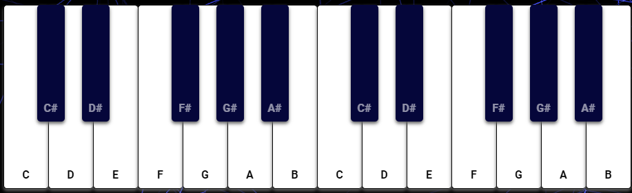

Synthesiser
Hello, Welcome to Synth-Play!
Click me to start playing a web piano.
Select a tone by pressing on the button and enjoy playing!
You can also check out
my github repository
for the project here.
